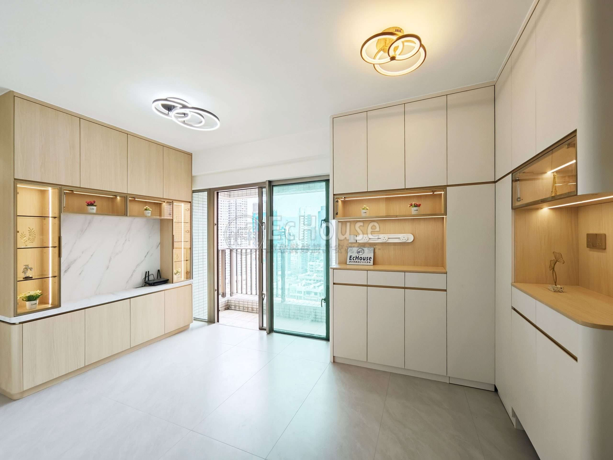
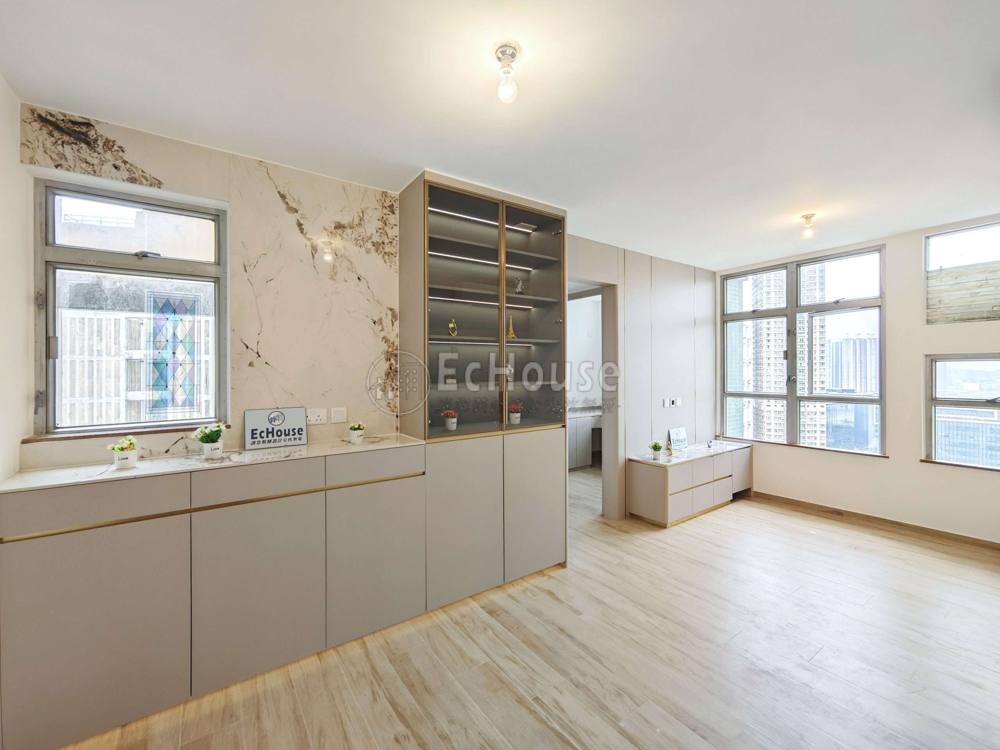
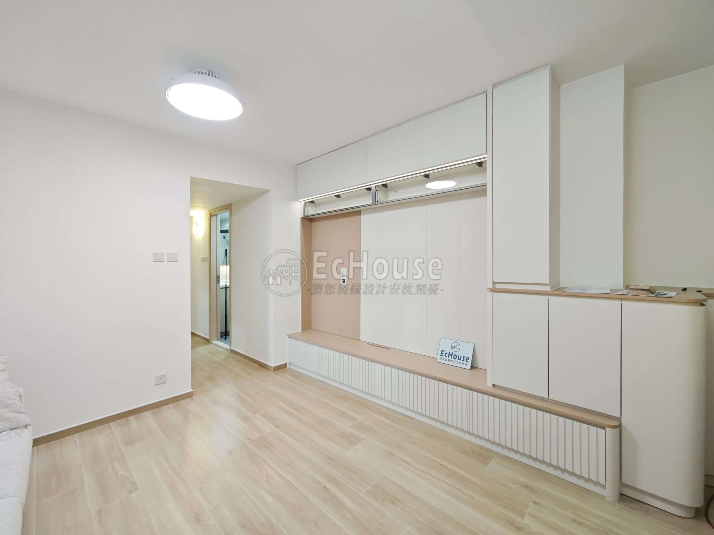
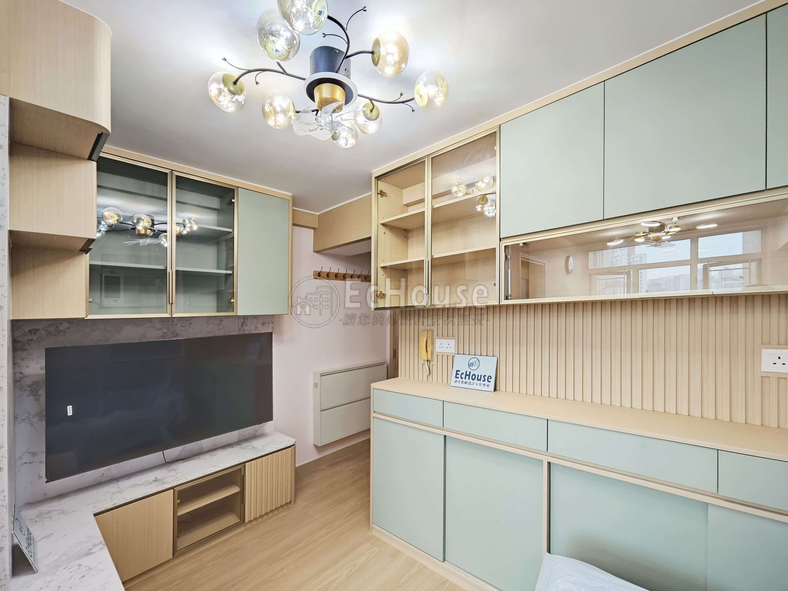
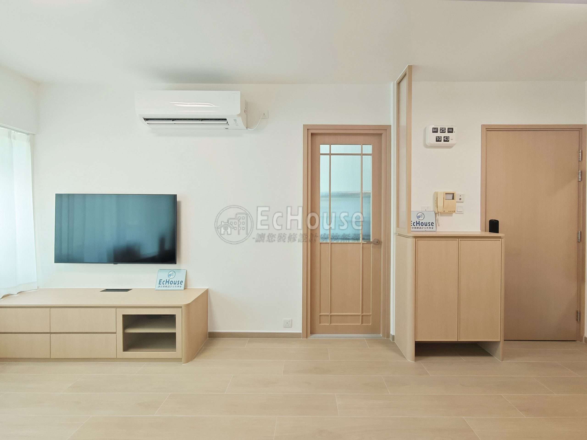

How to Compare Renovation Quotations in Hong Kong: Scope, Variations and Payment Terms

ECHOUSE original project photography — Grand Promenade, Tai Kok Tsui. A clear final scope helps joinery, storage, finishes and circulation come together as an ordered whole.
A renovation quotation should help you understand what you are buying, not merely tell you what you might pay. In Hong Kong, homeowners often receive quotations that look similar at first glance but are built on different assumptions about materials, quantities, site conditions, exclusions and responsibilities. The lowest headline price can therefore be the least useful comparison if it leaves the most important questions unanswered.
The practical answer is not to demand a single “perfect” quotation. It is to create a clear renovation brief, ask each party to price the same information as far as possible, and read every line with the finished home in mind. A good quote turns design decisions into accountable scope. It becomes a working reference during construction rather than a document that is forgotten once the first payment is made.
The Consumer Council has identified quotation transparency as a significant concern in Hong Kong’s home-renovation market. Its 2024 study found that consumers often struggle to compare quotations because their formats differ, and it recommended standard terms covering scope, materials, workmanship, time, payment, variations, warranties and compliance.[1] That is a useful framework for any homeowner preparing to appoint a renovation team.
1. Compare like with like before comparing totals
Start by giving every prospective contractor or designer the same project brief. It does not need to be a highly technical tender package. It should, however, identify the flat, the rooms involved, the intended layout, the materials you have chosen or wish to price, key appliances, loose furniture exclusions, access constraints and the parts of the project that remain undecided.
A quotation is only comparable when its underlying scope is comparable. If one proposal includes demolition, site protection, electrical changes, tile removal, waste handling, delivery, floor protection and final cleaning while another assumes some of those items are extra, the totals are not telling the same story.
Ask each quotation to separate work by area and trade where practical. A bathroom section might distinguish demolition, waterproofing, tiling, sanitary fittings, vanity, mirror, lighting and accessories. A kitchen section may separate cabinetry, worktop, appliances, plumbing, electrical work, backsplash, delivery and installation. This makes it easier to spot a missing item before construction makes it urgent.
Do not be embarrassed to ask what a line means. Clear questions at quotation stage are a sign of good project management, not distrust. If the answer stays vague, note that as information in itself: ambiguity in the planning stage often becomes a costly discussion when the site is already open.

ECHOUSE original project photography — Choi Ming Court, Tseung Kwan O. A detailed quotation gives cabinetry, stone, lighting and site coordination a shared target.
2. Read the scope beneath each material allowance
A material name alone is rarely enough. “Tiles included” does not explain the size, selection allowance, quantity, waste factor, edge trims, grout, adhesive, delivery or cutting complexity. “Kitchen cabinet” does not explain carcass material, door finish, internal hardware, handle type, countertop interface, appliance housing or installation conditions.
For each major item, look for four layers of clarity: the product or intended standard, the quantity or area, the installation responsibility, and the inclusions or exclusions around it. If exact material has not been selected, ask for a stated allowance and a process for documenting the choice. This makes it easier to see whether an upgrade is a genuine preference or the correction of an assumption that was never made clear.
The Consumer Council recommends a quotation framework that includes scope and specification of work items and materials, workmanship standards, project period, periodic payment terms, variation arrangements, warranties and protection of completed work.[1] You do not need to reproduce a formal legal template to benefit from that thinking. You do need enough detail that both sides can describe the same finished result.
A useful exercise is to choose three high-impact areas—often the kitchen, bathroom and flooring—and compare them line by line. These areas tend to involve multiple trades and material interfaces. If the proposal is clear there, it is more likely to be usable elsewhere in the project.

ECHOUSE original project photography — Fu Hong Garden, Tseung Kwan O. Clear work scope helps built-in storage, feature elements and finishing details meet consistently.
3. Treat exclusions and provisional items as decisions waiting to happen
Every renovation has uncertainty. Existing concealed conditions may not be visible until demolition. Material availability may change. A homeowner may decide to add storage, move a light fitting or choose a different worktop after seeing a full sample. The goal is not to pretend that no change will occur. It is to make uncertainty visible and manageable.
Look for exclusions. Common examples include utility-company charges, building-management deposits, external permits, appliance supply, air-conditioning works, moving services, curtain systems, loose furniture, specialist inspections and repairs to hidden conditions. An exclusion is not necessarily a problem; an undisclosed one is.
Provisional sums or allowances deserve the same attention. Ask what has been assumed, how the final amount will be measured, whether labour and material are both included, and what happens if the actual condition is simpler or more complex. Keep a written record of questions and answers so that each quotation is assessed on the same basis.
Where there is an existing issue—such as uneven walls, possible dampness, ageing wiring or uncertain pipe routes—ask whether the quote includes investigation, a contingency or a defined variation process. A lower total may simply mean the risk has not been priced yet.

ECHOUSE original project photography — Aldrich Garden, Shau Kei Wan. Material and joinery choices are easier to manage when changes are documented before work proceeds.
4. Agree how variations will be requested, priced and approved
A variation is a change to the agreed scope. It might come from the homeowner, a site discovery, a supplier constraint or a design adjustment. Changes are normal. Confusion is optional.
Before work starts, agree that a variation will be described in writing before the affected work proceeds whenever reasonably possible. The record should say what is changing, why it is changing, how it affects price, whether it affects the programme and who has approved it. A message thread may be practical for everyday coordination, but the key decision should still be easy to find and understand later.
This protects the renovation team from being asked to absorb unrecorded additions, and it protects the homeowner from receiving a surprise bill for a decision they understood differently. It also gives you an early warning if a series of small changes is pushing the project beyond the original budget.
The Consumer Council’s recommended quotation framework includes work variations and payment-related protections because these are the moments when an initially clear project can become difficult to manage.[1] The most useful habit is simple: pause, describe the change, price it, confirm it, then proceed.
5. Look beyond the deposit to the full payment sequence
A payment schedule should relate to identifiable project stages rather than vague moments in time. It should be possible to see what has been completed or delivered before each payment becomes due. Ask for clarity on deposits, progress stages, material orders, delivery, completion, defect rectification and final retention or final payment arrangements.
Consider the full cash-flow pattern, not only the first payment. A project with a modest deposit but several large early-stage payments may still leave the homeowner exposed if major work or materials have not yet been delivered. Equally, a contractor may need reasonable staged payments to order materials, coordinate trades and maintain a working programme. The purpose of a transparent schedule is to make that balance explicit.
The Consumer Council’s study reports that written contractual terms are strongly valued by consumers and recommends clear provisions around work and price, operations, warranties, remedies and payment protection.[1] Your own quotation checklist should be equally practical: what is paid, when it is paid, what confirms the stage is complete, and what documentation or inspection accompanies the handover.

ECHOUSE original project photography — Monterey Cove, Tseung Kwan O. A structured final inspection is easier when the approved scope, material selections and installation details are clear.
6. Build a handover checklist before construction begins
Handover is easier when its standard is discussed early. Ask how defects will be recorded, which items require testing, how appliance manuals and warranties will be transferred, what cleaning is included and how outstanding items will be tracked. If the project includes custom joinery, stonework, glazing, sanitary fittings or lighting, consider what a reasonable inspection looks like for each.
Keep photographs of key stages, especially before finishes conceal services. Store drawings, quotations, approved variations, material confirmations and contact details in one shared folder. This is not bureaucratic excess. It makes future maintenance easier and reduces the chance that a decision is forgotten after several months of site activity.
At the final walk-through, assess the home room by room. Open drawers, check door alignment, run water, inspect visible sealant, test lights and sockets where appropriate, and identify any finishing items with photographs and dates. A structured list is kinder to everyone than scattered recollections after the team has demobilised.
A practical quotation comparison checklist
| Check | What you should be able to see |
|---|---|
| Scope | Room-by-room work items and the boundaries of responsibility |
| Materials | Product standard, allowance or selected finish, quantity and installation detail |
| Exclusions | Items outside the price, including site constraints and third-party costs |
| Programme | Proposed sequence, start/finish assumptions and factors that may affect timing |
| Payments | Stage-linked amounts, evidence for completion and final-payment arrangement |
| Variations | Written process for describing, pricing and approving changes |
| Completion | Defect process, testing, cleaning, manuals, warranties and handover record |
Frequently asked questions
Should I choose the lowest renovation quotation?
Choose the quotation that gives you the clearest, most credible scope for the result you want. A lower figure may be appropriate, but only after you have confirmed what is included, excluded and assumed.
How detailed should a renovation quote be?
Detailed enough that both parties can identify the work, materials, quantities or allowances, responsibilities, timing, payment stages and how changes will be handled.
What is a variation order?
It is a written record of a change to the agreed scope. It should state the work, the reason, the cost effect, the timing effect and the approval before work proceeds where possible.
What should I keep after the renovation is complete?
Keep the final quotation, approved variations, plans, product details, warranty documents, photographs of concealed work stages and the final defect or handover record.
A quotation should make decisions easier
The best renovation quotation does not remove every uncertainty. It gives you a disciplined way to see uncertainty, make decisions and record the result. That is especially valuable in Hong Kong flats, where small dimensions and tightly coordinated trades mean that a missed assumption can affect the whole project.
Preparing to renovate a Hong Kong home? ECHOUSE DESIGN can help you turn your priorities into a clearer scope and a more useful basis for comparing renovation proposals. Book a Free Consultation.
Plan with a clearer brief.
Speak with ECHOUSE DESIGN about a practical renovation direction for your Hong Kong home.
BOOK A FREE CONSULTATIONReferences
[1] Consumer Council — Home Renovation Industry: Better Governance for Creating Comfortable Homes